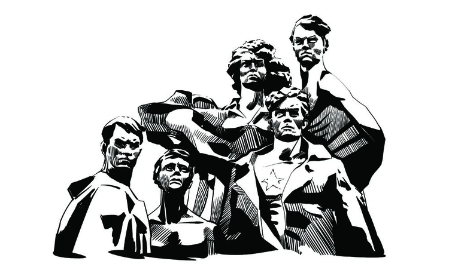

Александр Матросов
Стрелок-автоматчик 2-го отдельного батальона 91-й отдельной Сибирской добровольческой бригады имени Сталина.
Саша Матросов родителей не знал. Он воспитывался в детском доме и трудовой колонии. Когда началась война, ему не было и 20. Матросова призвали в армию в сентябре 1942-го и отправили в пехотное училище, а затем на фронт.
В феврале 1943 года его батальон атаковал опорный пункт фашистов, но угодил в ловушку, попав под плотный огонь, отрезавший путь к окопам. Стреляли из трех дзотов. Два вскоре замолчали, однако третий продолжал расстреливать красноармейцев, залегших в снегу.
Видя, что единственный шанс выйти из-под огня, это подавить огонь соперника, Матросов с однополчанином дополз до дзота и бросил в его сторону два гранаты. Пулемет замолчал. Красноармейцы пошли в атаку, но смертельное оружие застрекотало опять. Напарника Александра убило, и Матросов остался перед дзотом один. Нужно было что-то делать.
На принятие решения у него не было и нескольких секунд. Не желая подводить боевых товарищей, Александр своим телом закрыл амбразуру дзота. Атака увенчалась успехом. А Матросов посмертно получил звание Героя Советского Союза.
Николай Гастелло
Военный летчик, командир 2-й эскадрильи 207-го дальнебомбардировочного авиационного полка, капитан.
Работал слесарем, затем в 1932 году был призван на службу в Красную Армию. Попал в авиаполк, где стал летчиком. Николай Гастелло участвовал в трех войнах. За год до Великой Отечественной он получил звание капитана.
26 июня 1941 года экипаж под командованием капитана Гастелло вылетел для удара по немецкой механизированной колонне. Дело было на дороге между белорусскими городами Молодечно и Радошковичи. Но колонна хорошо охранялась вражеской артиллерией. Завязался бой. Самолет Гастелло был подбит из зенитки. Снаряд повредил топливный бак, машина загорелась. Летчик мог катапультироваться, но он решил исполнить воинский долг до конца. Николай Гастелло направил горящую машину прямо на колонну врага. Это был первый огненный таран в Великой Отечественной войне.
Фамилия храброго летчика стала нарицательной. До конца войны всех асов, решившихся пойти на таран, называли гастелловцы. Если следовать официальной статистике, то за всю войну было совершено почти шестьсот таранов соперника.
Лёня Голиков
Бригадный разведчик 67-го отряда 4-й ленинградской партизанской бригады.
Лене было 15 лет, когда началась война. Он уже работал на заводе, окончив семилетку. Когда фашисты захватили его родную Новгородскую область, Леня пошел в партизаны.
Он был храбр и решителен, командование его ценило. За несколько лет, проведенных в партизанском отряде, он участвовал в 27 операциях. На его счету несколько разрушенных мостов в тылу врага, 78 уничтоженных немцев, 10 составов с боеприпасами.
Именно он летом 1942 года недалеко от деревни Варницы подорвал машину, в которой находился немецкий генерал-майор инженерных войск Рихард фон Виртц. Голиков сумел добыть важные документы о наступлении немцев. Атака противника была сорвана, а молодой герой за этот подвиг был представлен к званию Героя Советского Союза.
Зимой 1943 года значительно превосходящий отряд противника неожиданно атаковал партизан у села Острая Лука. Леня Голиков погиб как настоящий герой - в бою.
Зина Портнова
Пионер. Разведчица партизанского отряда имени Ворошилова на оккупированной фашистами территории
Зина родилась и ходила в школу в Ленинграде. Однако война застала ее на территории Белоруссии, куда она приехала на каникулы.
В 1942 году 16-летняя Зина вступила в подпольную организацию «Юные мстители». Она распространяла на оккупированных территориях антифашистские листовки. Затем под прикрытием устроилась работать в столовую для немецких офицеров, где совершила несколько диверсий и лишь чудом не была схвачена врагом. Ее мужеству удивлялись многие опытные военные.
В 1943 году Зина Портнова ушла в партизаны и продолжила заниматься диверсиями в тылу врага. Из-за усилий перебежчиков, сдавших Зину фашистам, попала в плен. В застенках ее допрашивали и пытали. Но Зина молчала, не выдавая своих. На одном из таких допросов она схватила со стола пистолет и застрелила троих гитлеровцев. После этого ее расстреляли в тюрьме.
Молодая гвардия

Подпольная антифашистская организация, действовавшая в районе современной Луганской области. Насчитывала более ста человек. Младшему участнику было 14 лет.
Эта молодежная подпольная организация была образована сразу после оккупации Луганской области. В нее вошли как кадровые военные, оказавшиеся отрезанными от основных частей, так и местная молодежь. Среди самых известных участников: Олег Кошевой, Ульяна Громова, Любовь Шевцова, Василий Левашов, Сергей Тюленин и многие другие молодые люди.
«Молодая гвардия» выпускала листовки и совершала диверсии против фашистов. Однажды им удалось вывести из строя целую мастерскую по ремонту танков, сжечь биржу, откуда фашисты угоняли людей на принудительные работы в Германию. Члены организации планировали устроить восстание, но были раскрыты из-за предателей. Фашисты поймали, пытали и расстреляли более семидесяти человек. Их подвиг увековечен в одной из самых известных военных книг Александра Фадеева и одноименной экранизации.
Панфиловцы
28 человек из личного состава 4-й роты 2-го батальона 1075-го стрелкового полка.
В ноябре 1941 года началось контрнаступление на Москву. Враг не останавливался ни перед чем, совершая решающий марш-бросок перед наступлением суровой зимы.
В это время бойцы под командованием Ивана Панфилова заняли позицию на шоссе в семи километрах от Волоколамска - небольшого города под Москвой. Там они дали бой наступающим танковым частям. Сражение длилось четыре часа. За это время они уничтожили 18 бронированных машин, задержав атаку соперника и сорвав его планы. Все 28 человек (или почти все, здесь мнения историков расходятся) погибли.
По легенде, политрук роты Василий Клочков перед решающей стадией боя обратился к бойцам с фразой, ставшей известной на всю страну: «Велика Россия, а отступать некуда - позади Москва!»
Контрнаступление фашистов в итоге провалилось. Битва за Москву, которой отводили важнейшую роль в ходе войны, была проиграна оккупантами.